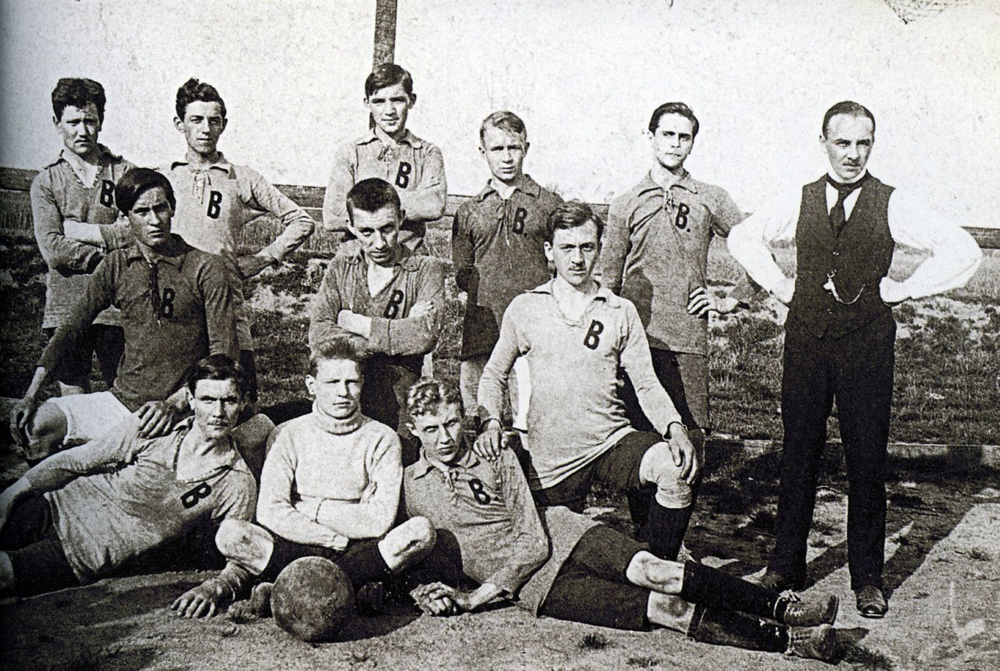

Geschichte von Borussia Dortmund
Borussia Dortmund, offiziell bekannt als Ballspielverein Borussia 09 e.V. Dortmund, hat eine reiche und bewegte Geschichte. Der Verein wurde am 19. Dezember 1909 in der nordrhein-westfälischen Stadt Dortmund gegründet. Der Name "Borussia" ist die lateinische Bezeichnung für Preußen, während "Ballspielverein" auf die Wurzeln des Vereins in verschiedenen Ballspielen hinweist. Die ersten Jahre des Vereins waren bescheiden. In den ersten Jahrzehnten ihres Bestehens spielten sie in lokalen Ligen und hatten erst 1936 ihren ersten Auftritt in der erstklassigen Gauliga, die damals die höchste Spielklasse im deutschen Fußball war. Aber dann begann der Aufstieg des Vereins. In den 1950er Jahren hatte Borussia Dortmund seine ersten großen Erfolge. 1956 und 1957 gewannen sie die deutsche Meisterschaft und 1965 gewannen sie den DFB-Pokal. 1966 erreichten sie einen Höhepunkt, als sie den Europapokal der Pokalsieger gewannen, indem sie den FC Liverpool besiegten. Sie waren der erste deutsche Verein, der einen europäischen Titel gewann. In den 1970er und 1980er Jahren durchlief der Verein jedoch eine schwierige Phase, die durch finanzielle Probleme und sportliche Misserfolge gekennzeichnet war. Es gab sogar eine Zeit, in der sie in die zweite Liga absteigen mussten. Die Wende kam in den 1990er Jahren unter der Führung des Trainers Ottmar Hitzfeld. Dortmund gewann 1995 und 1996 die Bundesliga und 1997 gewannen sie die Champions League durch einen Sieg gegen Juventus Turin. Diese Ära war von Spielern wie Matthias Sammer, Andreas Möller und Karl-Heinz Riedle geprägt. In den 2000er Jahren hatte Dortmund erneut mit finanziellen Schwierigkeiten zu kämpfen, aber sie konnten sich erholen und eine neue Ära des Erfolgs beginnen. Unter der Leitung von Trainer Jürgen Klopp gewannen sie 2011 und 2012 erneut die Bundesliga und erreichten 2013 das Finale der Champions League. Heute ist Borussia Dortmund bekannt für seine leidenschaftlichen Fans und das Signal Iduna Park Stadion, das als eines der atmosphärischsten in Europa gilt. Der Verein ist auch für seine Jugendarbeit bekannt und hat einige der besten Talente im Weltfußball hervorgebracht.
